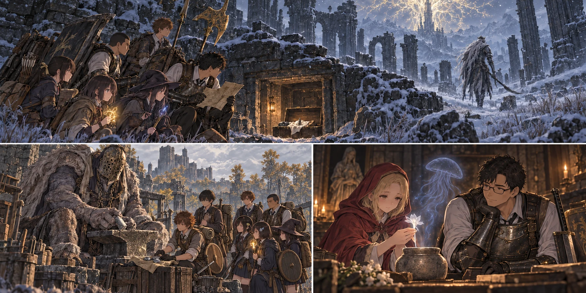

DAY95 / TURN1−105
王に届く刃を、みんなの手へ。

橋本 翼：石、足りました？
【DAY95｜朝、財布を開く】四万五千五百二十ルーン。先生は、その九割を整備の上限にした。残しておく安心より、使わずに失う一日の方が、今は重い。とはいえ、皆の武器を全部最高まで育てられる金額ではない。刃の長さも、術の役割も違う十三人の名前を、一本ずつ書き出した。
「先生の剣を先に。次は交代する二人、その後は、射つ者と術を使う者」。自分の剣だけを王に届かせても、自分が下がった途端に止まる。健太と陽太の槍、陸の大剣、花と千夏の弓。悠と拓海の杖、葵の触媒。紬と蓮の分にも段を割き、大地、直人、健太の特殊な武具は第三隊の帰還を待つ。
【円卓】先生が鈴玉を差し出すと、双子の老婆の前に並ぶ品が増えた。昨日までは高い段の石だけ買えて、そこへ届くための低い段がなかった。今日は下から積み上げられる。だが、まだ雪山の分がない。先生は必要な石だけを数え、届いていない鈴玉を持っていることにしなかった。
ヒューグは、片手剣の刃と先生の顔を順に見た。「ここまで使ったか」。先生は昨日の負けを短く話した。「次の一度に、間に合わせたい」。鍛冶師は答えるより先に、刃を灯りへかざした。「全部置け。誰に持たせる物かも、分かるようにしろ」。
円卓へ来たことのある直人と悠が、先に預かった武具を運ぶ。新たに全員を連れて来られるわけではない。教会では陽太、陸、花、紬が、後で戻る第二隊の分の札と布を用意していた。金があっても、運ぶ手と、受け取る順番は要る。
【第二隊｜ザミェル：2d6＝5・4＋4＝13】ロルドの祝福から、六人は雪の道を歩いた。前に先生と渡った場所だったが、今日は先生がいない。蓮は風下へ手を振り、大地が黄金のハルバードを壁より低くした。遠くの白い影が、崩れた石の間をゆっくり歩いている。
「倒す必要は、ない」。声に出すと、自分の足も止められた。槍と盾を持つ健太が退路側へ残り、拓海が次の遮蔽物を指す。敵の背が見えた瞬間だけ動き、顔がこちらへ向けば石の陰で待つ。鐘を鳴らすような金属音が、風の切れ間に聞こえた。
地下への階段は、地図で見るより細かった。蓮が箱を開けて戻るまで、千夏は弦を引かずに待った。射てば当たるかもしれない。だが、当てることと無事に帰ることは、今は同じではない。鈴玉が布に包まれる音を聞いてから、六人は来た道へ向き直った。
ザミェルの祝福は、未解放のまま残す。皆が倒れた時に使う一つを、ただ近いからという理由では使わない。六人はロルドまで戻り、安全な転送で教会へ帰った。先生のいる隊だけが危険な場所へ行ける、という日ではなくなっていた。
【第三隊｜城館への道：2d6＝6・5＋4＝15】昨日、引き返した曲がり角に着くと、凛は迷わず次の目印を指した。そこまでを知っているだけで、歩く速さが違った。王家領の廃墟では、先読みの紙と壁を照らし合わせる。向こうへ続く道が開けた時も、六人はすぐには走らなかった。
大きな影が、金槌を置いた。敵だと思えば引き返してしまうほどの身体。その巨人は、こちらの数と荷物を見てから、落ち着いた声で話しかけた。翼は、小さな剣の柄から手を離した。
「イジーさん、ですか。武器を強くする石を、買わせてください」。用意した数を告げると、巨人の指が石を一つずつ分けた。低い二つはまだ買える。三と四は、それぞれ三個で店の在庫が尽きる。無限の武器庫を見つけたわけではなかった。
翼は、小袋を三つに分けた。大地のハルバードには、一段目の石はもう要らない。直人の大竜爪と健太の盾は、一から必要だ。計十一個、四千三百ルーン。航がもう一度数え、凛が代金と残りの店の在庫を書き留めた。
「誰かを守るための物かね」。イジーの問いに、翼は少し考えて答えた。「前に立つ人たちが、戻ってくるための物です」。自分たちは、その戦いの場所へは行かない。それでも、そこへ渡せるものが袋の底で重かった。
六人は城館への道の祝福へ実際に触れ、自分たちの到達を登録した。次はここまで来る時間を省ける。しかし、来ていない主力十三人まで、この道へ飛べるようになったわけではない。買付を終えた六人は、教会へ帰った。
【石が揃う】第二隊の鈴玉三を、先生が円卓へ運んだ。鍛石五と六も買えるようになる。既に奉納した四を含めれば、通常武器はさらに先まで育つ道が開いた。それでも今回は、一本を限界へ近づけるために、他の者の分を削り切らなかった。
教会で直人が荷を受け取り、大地は帰還した身体を休めてから自分の武器を運ぶ。何往復かのあいだに、教会の机から一本ずつ武器が消え、打ち直されて戻ってきた。眠る場所を覆う布も、鎧の内側へ当てる布も、今日は同じ手で縫われていた。
【クララの一株】先生は最後に、ローデリカへ白い花の包みを渡した。ずっと前にヒューグとの間を往復して始めた相談を、今度は素材を持って結び直す。「この子にも、助けられました。少しでも、長く一緒にいられるようにしたい」。
ローデリカは遺灰の器へ手を添えた。「ええ。呼びかけてみます」。金槌の音の合間に、先生には聞き取れないほど小さな声が続いた。目の前へ戦うクラゲを呼んだのではない。器の中で、薄い青の気配が一度、ゆっくり明るくなった。
墓すずらん一株と、調霊の工賃二十ルーン。クララは＋一になった。急に王の拳を受け切れるわけでも、毒が必ず通るようになるわけでもない。召喚できる場所も、一度の休息で呼べる回数も変わらない。けれど、何もしてやれなかった昨日とは違う。先生は器を両手で受け取った。
【使い慣れた一本】先生の片手剣は＋十八。健太と陽太の槍、陸の大剣、二人の弓、悠と拓海の杖、葵の触媒は＋十二。紬の触媒は＋九、蓮の短剣は＋六。役割と残る予算を見て、段数を揃えることより、全員の持ち場を支えることを選んだ。
大地の黄金のハルバード、直人の大竜爪、健太の竜爪の盾は＋四になった。健太は盾を上げ下げし、足元を確かめる。「でも、掴まれたら同じだな」。陽太が頷いた。「なら、下がる合図は変えない」。強い道具を受け取っても、前回覚えた怖さを捨てなかった。
葵は触媒を手に、恵みと回復の違いをもう一度説明した。道具を強くしたから、術を使える回数が増えるわけではない。恵みの決まった働きまで何倍にもなるわけではない。青瓶を飲む場所を空けてもらい、先生が下がる時には、健太と陽太が別の角度から入る。今日は形を確かめるだけにした。
【刃だけでなく】傷んだ盾の縁を締め、鎧の継ぎ目と衣類を直した。十九点、百九十ルーン分。花の弓には、まだ使い込んだ跡が残る。完全な新品へ戻ったわけではないが、弦を引いた時の不安は薄くなった。石の強化と、物を手入れすることは、どちらも必要だった。
亮たちは今日も三十六食分を持ち帰った。狩猟は三と三に補正四で十。大きな戦果の話が続く机へ、結衣が温かい食事を置く。第三隊の六人も、雪から帰った六人も、鍛冶場を往復した者も、まずは座った。
【DAY95｜夜】支出は四万七百九十。開始時の財布の約八十九・六パーセント。今日の狩りの六ルーンを足して、残りは四千七百三十六。矢三百九十六本、食料五十九食。新たに死んだ者はいない。三十三人が教会へ揃い、明日へ持っていく武器をそれぞれの寝床へ置いた。
先生は、手帳の二日分の空白へ最後の線を引いた。埋まったのは撃破済みの王の名前ではない。次に挑む時、持っていけるものの一覧だった。王はまだいる。残る計画上の行動日は、九十六日目から九十九日目の四日。百日目の終わりという期限は、動いていない。
翼が眠る前に、小さな声で尋ねた。「石、足りました？」。「足りた。皆の分になった」。先生が答えると、翼はようやく自分の荷袋を枕元へ伏せた。前線へ行く者だけが、明日の戦いを作っているのではなかった。
今回の判定記録
| 判定 | 出目 | 補正 | 合計 |
|---|
| bZamor | 5+4 | 4 | 13 |
| cIji | 6+5 | 4 | 15 |
| base | 3+3 | 4 | 10 |
抽選前の条件 · 抽選結果